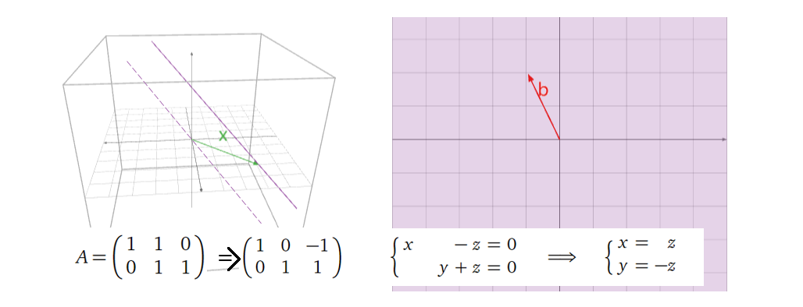

0. 前置知识
理解 \(R^n\)
（n维向量空间），增广矩阵（augmented
matrix），主元（pivot），自由变量（free
variable），维度（Dimension），标量（scalar）与向量（vector）的区别，知道向量、矩阵运算规则，大致知道子空间（Subspace）、基（Basis）、标准基（standard
basis）、可逆矩阵（invertible
matrix）等概念。其实最好就是上过照本宣科的线代课，对基本概念都有一些了解，想要从几何角度来加深对线代的理解，就可以看看这篇博客。
1. \(R^n\) 中的向量（Vector）
首先从最基本的概念讲起。一个n维向量在几何上有两种解释：一种是它是n维空间里的一个点（point），另一种则是向量（vector），如下图所示。

在之后的描述中，除非特别声明，否则默认向量起始于原点。但需要注意的是，这只是为了描述的方便，向量在可以在空间中任意位置，它并不一定要以原点为起点。换句话说，一个向量只由它的长度和方向决定，与其位置无关。
当然，向量也可以表示两个点之间的距离，如下图所示。

2. 向量的运算及其几何表示
向量的相加减结果可由向量间各个维度数值各自相加减得到，如下图所示。

而标量与向量的乘法结果可由标量与向量各个维度数值相乘得到，如下图所示。

所以，从几何角度上看，向量间的线性组合，由各个向量各自的缩放（与标量相乘），再将它们相加得到。
而向量的线性组合又能反映代数上的什么东西呢？假设有这么一个方程（向量方程，即由向量构成的方程，等价于一个线性代数方程）：

那么我们所要求的解（ \(x\) 与 \(y\)
），是不是就是两个向量的缩放因子？换句话说，一个向量方程（线性代数方程）有解即意味着等号右边的向量是等号左边向量们的线性组合，而解就是线性组合中的缩放因子。
3. 生成空间 （Span）
生成空间是一个很重要的概念。简单来说，对于一组向量，以他们为基能张成（线性组合而成）的空间就称为它们的生成空间，可记为：

其中 \(x_1\)
到 \(x_k\)
为标量（缩放因子），\(v_1\) 到 \(v_k\) 为基向量。
以在 \(R^3\)
中为例，一个向量张成的生成空间为一条一维直线，两个不共线的向量张成的生成空间为一个二维平面，三个不共线且不都在一个平面上的向量张成的生成空间则为一个三维空间，而三个不共线但在一个平面内的向量张成的生成空间则为一个二维平面，如下图所示。

结合上面线性组合相关的讨论，我们又可知道由一组基向量以及它们的生成空间中的任意向量组成的向量方程（代表着一个线性代数方程）有解。
4. 矩阵方程 （Matrix Equations）
首先回忆一下，一个矩阵 \(A\) 乘上一个向量 \(x\) ，可以视为矩阵 \(A\) 中各向量与向量 \(x\)
中各元素的线性组合，如下公式所示。

其中
\(x_1\) 到 \(x_n\) 为标量（缩放因子），\(v_1\) 到 \(v_n\) 为向量。所以显然，向量
\(x\)
中元素的数目应与矩阵 \(A\) 中向量的数目相等，即对于
\(Ax = b\) 而言，矩阵
\(A\) 的列数应与
\(x\) 维度一致。而这个
\(Ax = b\)
就被定义为矩阵方程 （Matrix
Equation)，其中向量 \(x\)
中各元素大小未知（想想与向量方程的关系？是不是两者是等价且可以相互转换的？）。这也是线性系统的另一种表达方式。
总结一下，目前为止，结合代数中的内容，我们就有四种方式来思考一个线性系统：
1. 线性代数方程组（代数角度）；
2. 增广矩阵（代数角度）；
3.
向量方程（几何角度）；
4. 矩阵方程（几何角度）。
上面我们解释了矩阵方程与向量线性组合的关系，再回头看我们之前讨论的线性组合与生成空间的关系，是不是发现又可以串起来了？也就是说，当且仅当向量
\(b\) 在矩阵
\(A\)
中各向量张成的生成空间里， \(Ax =
b\)
有解。其实这就搭起了代数中方程有解与几何中生成空间的桥梁。下面给一个直观的例子。
假如我们要求 \(Ax =
b\) 是否有解？对于： \[
\mathbf{A} = \begin{pmatrix}
2 & 1\\
-1 & 0\\
1 & -1
\end{pmatrix},
\mathbf{b} = \begin{pmatrix}
0\\
2\\
2
\end{pmatrix}
\] 由上面我们的讨论可知，当且仅当向量 \(b\) 在矩阵 \(A\) 中各向量张成的生成空间里，
\(Ax = b\)
有解。所以在下图中我们将 \(A\)
中各向量张成的生成空间（紫色）与 \(b\) （黑色箭头）画出，可见
\(b\) 并不在
\(A\)
中各向量张成的生成空间中，所以方程无解。
接下来我们考虑 \(Ax =
b\)
有解的情况，怎么从几何上去表示其解呢？在回答这个问题之前，我们先考虑一个简单一点的例子：如果
\(b\)
为零向量时解是什么呢？考虑下面的情况：
假设我们要求 \(Ax = 0\)
的解（这类方程至少有一个平凡解(trivial solution) \(x=0\) ），对于： \[
\mathbf{A} = \begin{pmatrix}
1 & -1 & 2\\
-2 & 2 & -4
\end{pmatrix}
\] 我们用参数化的形式表示它的解，如下所示：

显然我们可以将其转换为向量方程的形式：

所以显然，方程的解为上述两个向量张成的生成空间：

将其可视化如下图所示：
所以从几何角度上看，方程 \(Ax = 0\)
的解可以表示为某个/组向量张成的生成空间，注意区分好与上文中对于
\(Ax = b\)
讨论的区别（“解是一个生成空间（解是什么）”与“解在生成空间中（有解的条件）”的区别）。顺带回顾一下变量数目与空间维度的关系：在这个例子中，一共有三个变量（构成
\(x\)
），那么方程的解集必在 \(R^3\)
或其子空间，而这个例子中只有两个自由变量（free
variable），则解集是在一个二维平面上（自由变量的数目等于解集空间的维度）。
接着回到我们之前的问题：假设 \(Ax =
b\) 有解，那么它的解如何在几何上表示？它与 \(b\)
为零向量时有什么不同呢？考虑下面情况：
\[
\mathbf{A} = \begin{pmatrix}
1 & -1 & 2\\
-2 & 2 & -4
\end{pmatrix}，
\mathbf{B} = \begin{pmatrix}
1\\
-2
\end{pmatrix}
\] 类似地，我们可以得到其解为：

对比这个结果与上面 \(b\)
为零向量时的结果，显然可以看出，两者相差的只是一个平移( \(x_2\) 与 \(x_3\) 为0时的特解) \(p\) ，如下图所示：
当然，这里举的例子都是方程不是有唯一解的情况，而如果方程只有唯一解，其解在空间上表示就只是一个点了（此时
\(Ax = b\) 与
\(Ax = 0\)
相差的依然只是一个平移）。
至此，我们在几何角度上又从两个方面去描述一个矩阵方程（ \(Ax = b\) ），注意两者的区别：
1. \(Ax = b\)
有解的条件（\(b\)
在矩阵 \(A\)
中列向量张成的生成空间中，为 \(x\) 选 \(b\)）；
2.
其解集空间（对于确定的 \(b\)，为 \(b\) 选 \(x\)）。
5. 线性独立（Linear Independence）
首先回忆一下线性独立的定义：如果一组向量 \(v_1\) 到 \(v_k\)
，对于下面的方程有且仅有一个平凡解（\(x_1=x_2=...=x_k=0\)），则称它们彼此
线性独立。

换句话说，就是这组向量中，没有任何一个向量可以由其他向量线性组合得到。下图给出两个
线性依赖（不独立） 的例子：
也就是说，从几何角度上看，如果一个向量集合中，有一个向量在其他向量张成的生成空间中，那么这组向量就线性依赖（不独立）；而如果其中任何一个向量都不在其他向量张成的生成空间中，那么这组向量就线性独立。再换个角度想，我们将这些向量一个一个加入向量组中，每加入一个向量组张成的生成空间都增大，那么这组向量就是线性独立的。下面再可视化给出一个线性独立的例子：

而从代数角度上看，矩阵 \(A\)
中各列向量线性独立的条件是化简后每一列都有一个主元（也就是说对于一个列数目大于行数目的矩阵，它必然有线性依赖的列，因为没法做到化简后每一列都有一个主元）。
6. 子空间、列空间、零空间与基（Subspace, Column Space, Null Space and Basis）
什么是子空间（Subspace）？简单地说，子空间就是满足下面三个条件的
\(R^n\)
里的一些点构成的子集（Subset）：
1.
加法下的封闭性：该子空间中的两个向量相加，结果仍在该子空间中；
2.
标量乘法的封闭性：该子空间中的向量乘上一个标量，其结果仍在该子空间中；
3.
非空性：零向量在这个子空间中（子空间要存在，势必要包含了零向量）。
所以显然，由上面的前两个性质，某一子空间中的向量的线性组合（它们的生成空间）结果仍在该子空间中；且由第三个性质，子空间必然会经过原点。换句话说，子空间本身就是一个生成空间，它包含了它之中任何向量张成的生成空间。进一步讲，其本身就是其最大的一个子空间。也就说，随着选中的某一子空间中的向量数目变多，这些向量张成的生成空间也会逐步填满这个子空间。下图给出两个子空间的例子（一维与二维）：

其中黑色箭头表示用于张成生成空间的向量（基向量，下面会进一步讨论），黑点表示原点。下面再给出一些非子空间的例子：

其中紫色区域表示定义的“空间”（注意并不是子空间），黑色箭头表示“空间”上的向量，红色箭头表示由“空间”中向量线性组合得到的不在“空间”中的向量。
另外注意区别空间子集（subset）与子空间（subspace）的区别：子空间是一个需要满足上述三个条件的空间子集，也就是空间子集是一个更大的概念。
接下来我们讨论两种重要的子空间：列空间（由矩阵
\(A\)
中各列向量张成的子空间/生成空间，记作Col( \(A\)
)）与零空间（对矩阵 \(A\)，满足 \(Ax=0\)
的解构成的子空间/生成空间，记作Null( \(A\) )）。下面如下矩阵
\(A\) 举例：
\[
\mathbf{A} = \begin{pmatrix}
1 & 1 \\
1 & 1 \\
1 & 1
\end{pmatrix}
\] 它的列空间可以表示为：

它的零空间可以表示为：

留意列空间是一条在三维（维度大小与矩阵的行数目相同）空间中的一维（等于矩阵化简后主元的数目）线，零空间是一条在二维（维度大小与矩阵的列数目相同）空间中的一维（等于矩阵化简后自由变量的数目）线。这边又隐含了一个重要的定理：矩阵的列空间的维度与零空间的维度之和为矩阵列的数目，在这个例子中为
\(1+1=2\) 。
上面讲完子空间/生成空间，接下来我们讨论子空间/生成空间中的基。为什么需要基的概念，我想最朴素的原因就是数学家们想用最少数量的向量来表征一个生成空间，而基于这个想法，基向量之间就必须相互独立，不然就会有冗余的向量（可以由其他向量线性组合得到）。而对于同一个非零生成空间，它可以有无数组基（比如一个平面，其上任意两个不共线的向量构成它的一组基），但基向量的数目是确定的（由生成空间的维度决定，这其实也是维度的定义）。下图给出了
\(R^2\) 的两组基：
其中左图是一组标准基。
那么如何确定列空间的基呢？对于某个矩阵，它的主元（pivot）所在列就构成了它的一组基，如下举例所示，其中RREF（Reduced
row echelon form）表示简化列阶梯形矩阵：

也就是说，列空间的基向量的数目（维度）等于矩阵主元的数目。
而如何确定零空间的基呢？将零空间以参数化向量方程表示出来，也可以很轻易得到它的一组基：

类似地，零空间的基向量的数目（维度）等于矩阵自由变量的数目。也就是说，我们从基的角度出发，再次印证了上面给出的一个定理：矩阵的列空间的维度与零空间的维度之和为矩阵列的数目（主元与自由变量数目之和）。下面给出几个图进一步说明这个关系：


而其实矩阵的
秩（rank）
代表的就是其列空间的维度，零化度（nullity）代表的就是其零空间的维度。也就是说，一个矩阵的秩加上其零化度，等于其列向量的个数（\(rank(\mathbf{A})+nullity(\mathbf{A})=n\)，\(n\) 为矩阵 \(\mathbf{A}\)
的列数目）。再结合之前的讨论，换一个说法就是，一个矩阵的主元的个数加上其解集的维度（自由变量的个数），等于其拥有的变量的总个数。其实这个关系也反映了我们在选择
\(Ax = b\) 中的
\(x\) 与 \(b\) 的平衡：当我们拥有的选择
\(x\)
的自由越多，那么我们拥有的选择 \(b\) 的自由就越少，而这个关系被矩阵
\(A\)
中列数目所限定。
而很自然地，当基确定之后，我们就可以基于基构建一个新的坐标系。在笛卡尔坐标系下，\(u_1\) ~ \(u_4\) 的坐标分别为： \[
u_1 = [3, -1, 0], u_2 = [-3/2, 1, -3/2], u_3 = [5/2, -3/2, 2], u_4 =
[3/2, 0, -3/2]
\] 现在考虑用 \(v_1,
v_2\) 来表示它们，如下图所示：

我们就可以得到以 \(v_1, v_2\) 为基的新坐标系下\(u_1\) ~ \(u_4\) 的坐标：
\[
u_{1\beta} = [1, 1]， u_{2\beta} = [-1, 1/2], u_{3\beta} = [3/2, -1/2],
u_{4\beta} = [0, 3/2]
\]
由此，相同的几个点在另一个空间中被表示出来，这就完成了一次空间变换。当然，能这么表示的前提是
\(u_1\) ~ \(u_4\) 几个点刚好在 \(v_1, v_2\) 的生成空间中。
7. 矩阵变换（Matrix Transformations）
对于一个\(m\)行\(n\)列的矩阵 \(A\) ，其有 \(b=Ax\)
的关系，我们可以将其视为一个变换（Transformation），将自变量
\(x\) (维度为\(n\)的向量)，变换为因变量 \(b\) (维度为\(m\)的向量)。顺便再提一下， \(b\) 在矩阵 \(A\)
的列空间中。下图给出一个例子，其中绿色箭头为 \(x\) ，红色箭头为 \(b\) ，中间的矩阵即为 \(A\) ，紫色直线为矩阵 \(A\) 的列空间，也就是说矩阵
\(A\)
将一个三维空间（定义域，domain）中的向量 \(x\)
与其列向量进行线性组合，将其变换到一个二维平面（取值空间，codomain）上，但在这个二维平面上
\(A\)
的列空间只是一条一维直线（值域，range，其实也就是矩阵 \(A\) 的列空间），上面代表着
\(b\)
能分布的空间。
这边再给出几个矩阵背后代表的几何意义的例子，最好自己先思考再看之后的答案以加深理解：
如果要将三维空间的点( \(x\)
)投射（projection）到x-y平面上( \(b\) )，那矩阵 \(A\) 应该是什么样子的呢？
那如果要使一个二维平面上的点关于y轴对称呢（Reflection）？

而如果要使一个二维平面上的点保持不变呢（Identity）？
这也是单位矩阵（Identity
Matrix）名字的由来。那如果要将向量进行缩放（Dilation），是不是只需要对单位矩阵乘上一个标量？
接着试着回答一个稍微难一点的问题：如果要将二维平面上的点逆时针旋转90度呢（Rotation）？

留意到这里矩阵 \(A\) 的列向量（[0,1],
[-1,0]）是不是刚好是二维笛卡尔坐标系下基向量（[1,0],[0,1]）逆时针旋转90度的结果呢？
而如果要实现下图所示的在x轴上的错切（shear in the x-direction），矩阵 (
\(A\)
)应该是什么样的？
可以尝试下面这三个矩阵代表的几何变换分别是什么。
\[
\mathbf{A_1} = \begin{pmatrix}
1 & 1 \\
0 & 1
\end{pmatrix},
\mathbf{A_2} = \begin{pmatrix}
1 & 0 \\
1 & 1
\end{pmatrix},
\mathbf{A_3} = \begin{pmatrix}
1 & 1 \\
1 & 1
\end{pmatrix}
\] （答案是第一个矩阵代表着上面的变换。）
对于某个矩阵变换，我们还需要留意，其对应的是一个一对一（one-to-one）的变换（换个角度就是，矩阵方程有唯一解或无解/
\(Ax=0\)
只有一个平凡解/ 矩阵 \(A\) 的列向量都线性独立/ 矩阵
\(A\)
的每一列都有主元/ 矩阵 \(A\)
的列空间（值域）与定义域维度一致），还是一个多对一的变换，注意没有一对多的变换。下面给出几个图解例子：
首先是一个一对一的矩阵变换例子：
接着看一个多对一的矩阵变换的例子：

这个图中的矩阵 \(A\)
代表着将三维空间中的点投影到x-y平面上，也就是说，在每一条跟z轴平行的线上的点（
\(x\) ）都对应着同样的
\(b\) 。
接下来给出一个稍微复杂一点的例子：

怎么理解这个结果？首先这是一个\(R^3\)到\(R^2\)的投射，维度的损失带来的就是多对一的投射（在这个例子中，一条直线（由矩阵的零空间维度决定）投射到一个点）；其次，我们之前讨论过，
\(Ax=b\) 的解可以视为
\(Ax=0\)
解（零空间）的平移，在这个例子中， \(Ax=0\) 的解为一条直线（ \(x=z\) 与 \(y=-z\) 两个平面的交界线，图中紫色虚线），而
\(Ax=b\)
的解即为其平移后的直线（紫色实线），绿色向量即为其平移的大小。
其实也可以看出，如果一个矩阵的列数n多于行数m，这就意味着把一个高维空间的向量投影到一个低维空间（代数角度可以是矩阵没办法每一列都拥有主元，即列向量们线性依赖），这种情况下矩阵的零空间必然不只是零向量，进而
\(Ax=b\)
的解也不只是一个向量，所以此时矩阵就无法实现一对一的投射。
顺带一提，像最后这个例子，矩阵 \(A\)
的列空间（值域）与其取值空间一致（从代数角度其实就是，每一行都有主元，不然有的维度就被丢掉了），这种变换又叫onto变换（不知道怎么准确翻译...）。类似地，如果一个矩阵的列数n少于行数m，那么其取值空间维度（每一列向量含有的变量数目，即行数m）必然大于列空间（n个向量至多只能张成一个n维空间，\(n<m\)）维度。
对于一般的矩阵，上述两种变换，可以同时满足，也可以同时不满足，也可以只满足其中一个。但对于方阵而言，上述两种变换，必然同时满足，或同时不满足。为什么？对方阵而言，是否每一列都有主元（一对一变换成立）就意味着每一行都有主元（onto变换成立）？反之亦然。
接下来讨论一个问题：矩阵变换与线性变换（Linear
Transformations）有什么关系？首先回忆下线性变换的定义，如果一个变换下面两个性质，则称其为线性变换：
\[
T(x+y)=T(x)+T(y),
T(cx)=cT(x)
\]
显然，每一个矩阵变换都能满足上述性质，也就是说每一个矩阵变换背后都代表着线性变换；而反之，每一个线性变换也都可以用矩阵变换来表示。换句话说，矩阵变换与线性变换是完全等同的。（顺带一提，留意像
\(y=x+1\)
这种两个变量之间虽然是线性关系，但其变换并不是线性变换，不要混淆线性关系与线性变换的概念。其实正是这个表达式中的常数项破坏了其线性变换。）
也就是说，一个矩阵可以用下面的形式表示，其中\(T\)代表着某种线性变换，\(e_1, e_2, ..., e_n\) 代表着\(R^n\)的标准基向量。
怎么理解呢？矩阵 \(A\) 的每一列代表着对 \(R^n\)
空间中每一个维度进行的线性变换。有点抽象，举个例子好了：
假如现在要构造一个矩阵，其代表着将\(R^3\)中的点关于xy平面进行对称映射，再将其投影到yz平面上，那么这个矩阵应该是什么？
首先确定矩阵的第一列，也就是对\(R^3\)中的 \(e_1\)
进行操作，其在经过上述操作后，会落到零点，所以：

接着确定矩阵的第二列，也就是对\(R^3\)中的 \(e_2\)
进行操作，其在经过上述操作后，会保持不变，所以：
接着确定矩阵最后一列（变换后的空间仍是\(R^3\)），也就是对\(R^3\)中的 \(e_3\)
进行操作，其在经过上述操作后，其方向会取反，所以：

所以最后确定下来矩阵 \(A\) 应该为：

8. 矩阵乘法（Matrix Multiplication）
首先强调一下矩阵乘法（ \(AB\) ）中， 矩阵 \(B\) 的行数必须与矩阵 \(A\)
的列数一致。怎么理解呢？矩阵乘法可以理解为前一个矩阵 \(A\) 对后一个矩阵 \(B\)
的各列向量进行空间变换，如下所示：

假设
\(A\) 的维度为 \(m\) x \(n\)，那么其代表着一个从 \(R^n\) 到 \(R^m\) 的空间变换，那么必然 \(B\) 中列向量的维度也必须为 \(n\)，也就是矩阵 \(B\) 的行数必须为 \(n\)。
同样重要的是，一个 \(m\) x \(n\) 的矩阵 \(A\) 乘上一个 \(n\) x \(p\) 的矩阵 \(B\)，其结果维度为 \(m\) x \(p\)。这个又怎么理解呢？同样还是矩阵乘法可以理解为前一个矩阵
\(A\) 对后一个矩阵
\(B\)
的各列向量进行空间变换，而前者代表着一个从 \(R^n\) 到 \(R^m\)
的空间变换，也就是变换后的列向量维度为 \(m\)，即 \(AB\) 结果的行数为 \(m\)；而原来矩阵 \(B\) 有 \(p\)
个列向量，对他们分别进行矩阵变换并不会改变他们的数量，也就是说，
\(AB\) 结果的列数为
\(p\)。
类似地，基于矩阵乘法可以理解为前一个矩阵对后一个矩阵的各列向量进行空间变换，我们也可以理解矩阵乘法不满足交换律（对不同的向量进行不同的变换，他们相等的条件是不是很苛刻？），仅在少数情况下
\(AB\) = \(BA\) （但当方阵 \(A\) 与 \(B\) 有 \(AB=I\) 时，直接会有 \(BA=I=AB\)）。
而因为矩阵可以代表着多对一的变换，由 \(AB=AC\) 并不能得到 \(B=C\)，比如下面的例子：

上面是理解矩阵乘法的一个角度，也就是把第二个矩阵当成运算对象。而从另一个角度出发，之前我们提过，一个矩阵代表着一种线性变换，那么显然，两个矩阵相乘其实代表着做完一种线性变换之后接着再做另一种线性变换（链式线性变换）。
9. 矩阵的逆（Matrix Inverses）
首先明确，我们只针对方阵去讨论可逆的性质（此章节的矩阵都特指方阵）。怎么判断矩阵是否可逆？一种方式是可以通过其行列式（determinant）是否为0来判断，为0时矩阵不可逆（后面再进一步讨论矩阵行列式）。另一种方式是将增广矩阵
\((A|I_n)\) 变换为
\((I_n|B)\)，那么矩阵
\(B=A^{-1}\)，即
\(B\) 为 \(A\) 的逆（这里隐含的条件是方阵
\(A\) 必须满秩）。
而矩阵的逆是用来求解线性方程的一种很方便的方式（\(x=A^{-1}b\)）。
以上都是一些代数角度的讨论，接下来我们进行一些更几何化的补充。前面我们说了，一个矩阵代表着一种线性变换，那么逆矩阵的作用就是“撤销”这个线性变换。这其实也很好理解，\(A^{-1}Ax=I_nx=x\)，首先
\(A\) 对 \(x\) 进行了一个线性变换，然后
\(A^{-1}\)
又撤销了这个变换（做了一个反向变换），结果就是 \(x\)
经过这两个线性变换之后仍是其自身。下面给几个例子：
比如如果一个矩阵
\(U\)
代表着缩小向量长度为\(1/n\)，那么其逆矩阵 \(T\) 就代表着放大向量长度至\(n\)倍：

再比如一个矩阵 \(T\)
代表着逆时针旋转45°，那么其逆矩阵 \(U\) 就代表着顺时针旋转45°：
那又如何理解矩阵不可逆呢？考虑下面这个例子：矩阵 \(A\)
代表着将三维空间中的点投影到xy平面，即:
显然这里的矩阵 \(A\)
并不满秩，也就是说它代表着一个多对一的变换，即在它对矩阵进行线性变换之后，我们就丢掉了在变换之前的信息（我们只能知道哪些点会投影到变换后的点上，但确定不了是哪个点），而上面我们说了，矩阵的逆代表着反向变换，但这个时候矩阵已经不知道应该反到哪个点上了，所以这个矩阵就不可逆了。也就是说，一个方阵只有代表着一对一变换（因为是方阵也代表着onto变换），其才可逆。
结合之前的内容回顾总结一下，一个 \(n\) x \(n\) 方阵 \(A\)
可逆，其与下列表述等价（它们之间也等价）：
1. \(A\) 拥有 \(n\) 个主元；
2. \(A\)
的简化列阶梯形矩阵（RREF）是单位矩阵 \(I_n\) ；
3. \(A\) 的零空间只有{0}；
4.
\(A\) 的列空间是\(R^n\)；
5. \(A\) 的列向量线性独立；
6.
\(A\)
的列向量可以张成\(R^n\)；
7.
\(A\)
的列向量构成了\(R^n\)的一组基；
8.
\(A\) 的秩是\(n\)（满秩）；
9. \(Ax=b\) 对于每个\(b\)都只有唯一解（且在\(R^n\)中）；
10. \(A\) 代表的变换为一对一变换；
11. \(A\)
代表的变换为onto变换。
也就是说，对一个可逆矩阵，上列表述都成立；而对于一个不可逆矩阵，上列表述都不成立。
顺带一提，要证明矩阵 \(A\) 可逆，只需要证明 \(AB=I_n\) 或 \(BA=I_n\)
中的一个就足够。这里给出一个不完全的证明帮助理解：
\(AB=I_n\) → \(A^{-1}AB=A^{-1}I_n\) →
\(B=A^{-1}\) →
\(BA = A^{-1}A\) →
\(BA=I_n\)
10. 行列式（Determinant）
行列式是许多中文教材中非常吓人的一个概念，看起来定义很复杂，很多人又不知道它到底有什么作用，也就失去了学好它的欲望。但通过下面的讨论，我们应该会发现行列式其实是一个很重要也很有用的工具。
首先我们还是给出行列式很吓人的定义。行列式是一个将方阵转换为实数的函数（det:{square
matrices} → \(R\)），其满足下面四个性质：
1. 对方阵
\(A\) 进行行替换（row
replacement）操作并不会改变其行列式 det(\(A\)) 大小；
2. 对方阵
\(A\)
的某一行进行\(c\)倍缩放（scaling），其行列式也会缩放相应的倍数\(c\)；
3. 对方阵 \(A\)
某两行进行交换（swapping），其行列式会取相反数；
4. 单位矩阵
\(I_n\)
的行列式等于1。
引理：满足上述四个性质的将方阵转换为实数的函数有且仅有一个。进一步说，对于一个方阵，你都会得到一个唯一数值大小的行列式。
为什么要给出这么一个复杂的定义，我们可以从两个角度进行理解：代数角度上方便我们对某方阵
\(A\)
的行列式det(\(A\))进行计算；几何上则更深刻告诉我们这么定义的动机。类似地，在本章节下方的讨论中，矩阵都特指方阵。
代数角度上，由于我们知道单位矩阵的行列式等于1，且满秩的方阵进行一系列的行变换都可以变成单位矩阵，而每一步的行变换对方阵的行列式的影响我们都知道，基于此我们可以很轻松得到一个满秩方阵的行列式。下面举一个例子：
首先我们知道最后一步的单位矩阵的行列式等于1，而其是由第四步的矩阵进行行替换操作（\(R_1=R_1-4R_2\)）得到的，而行替换操作前后的矩阵的行列式保持不变，所以此步操作之前的矩阵的行列式也等于1；而第三步是一个缩放操作（\(R_2=R_2÷-7\)）得到的，而对矩阵进行缩放同时也会导致其行列式大小的缩放，所以这一步操作之前的矩阵的行列式为\(1×(-7)=-7\)；以此类推（再考虑行交换操作会使矩阵的行列式取反），我们可以得到原始方阵的行列式为7。
类似地，基于上述运算，我们能得到一个二维方阵的行列式的计算表达式如下：
\[
\operatorname{det}\left(\begin{array}{ll}
a & b \\
c & d
\end{array}\right)=a d-b c
\]
而对于一个阶梯形式方阵，其行列式就是其对角线上元素的乘积（对上/下三角方阵、对角阵都成立）。进一步的，只要一个方阵其某一行或某一列都为0，那么其行列式就为0。更进一步，非满秩的方阵其行列式为0。
记得在教科书中，我们学的行列式的计算方法是一种迭代的运算方式：拉普拉斯展开
/ 代数余子式展开（Laplace expansion / cofactor
expansion）。在这种计算方式下，我们可以按行展开：
\[
\operatorname{det}(A)=\sum_{j=1}^{n} a_{i j} C_{i j}=a_{i 1} C_{i
1}+a_{i 2} C_{i 2}+\cdots+a_{i n} C_{i n}
\] 也可以按列展开：
\[
\operatorname{det}(A)=\sum_{i=1}^{n} a_{i j} C_{i j}=a_{1 j} C_{1
j}+a_{2 j} C_{2 j}+\cdots+a_{n j} C_{n j}
\] 其中，\(a_{ij}\)是矩阵
\(A\) 第\(i\)行第\(j\)列的元素，而\(C_{ij}\)是矩阵 \(A\) 第\(i\)行第\(j\)列的代数余子式（cofactor），其定义如下：
\[
C_{i j}=(-1)^{i+j} \operatorname{det}\left(A_{i j}\right)
\] 其中\(A_{i j}\)是矩阵
\(A\) 删去第\(i\)行第\(j\)列后剩下的元素组成的维度为 \((n-1) × (n-1)\) 的矩阵。
顺带一提的是，上述第一种运算的计算复杂度也相对较低，不管对人还是对机器而言（\(O(n^3)\)），而代数余子式展开计算的计算复杂度为\(O(n !) \approx O\left(n^{n}
\sqrt{n}\right)\)。那数学家为什么还要开发代数余子式展开这么一套工具，它在什么时候有用呢？第一种情况，如果一个矩阵的某行/列中有很多的零，那么其对应位置的代数余子式就没有计算的意义了，在这种情况下计算可以很大程度被简化；另一种情况，如果一个矩阵里有未知大小的元素，这个时候用上述第一种运算是不太合适的，因为我们并不确定这个未知元素在矩阵约简成阶梯矩阵后是否会是主元。
而在几何角度上，矩阵的行列式与“容积”（volume）大小有着密不可分的关系。行列式计算着平行六面体（paralellepiped）的容积
，其由 \(R^n\)
中的\(n\)个向量 \(v_1, v_2, ..., v_n\)确定，当\(n=2\)时，其退化为一个平行四边形。下面举几个例子：
首先二维与三维空间中的标准正交基组成的平行四边形/平行六面体如下图所示：

而对于二维与三维空间中的线性独立的任意二/三个向量组成的平行四边形/平行六面体举例如下图所示：
那么如果上述组成平行四边形/平行六面体的向量线性依赖呢？这时几何图形的“容积”为0，如下图所示：
这些向量线性依赖，则意味着它们组成的矩阵非满秩，而我们上面已经讨论过，非满秩的矩阵的行列式为0，所以这边我们就得到一个很重要的观察：几个向量组成的平行六面体（包含二维空间下的平行四边形，下面不再赘述）的容积为0，当且仅当它们组成的矩阵（作为行向量或列向量）的行列式为0。更进一步地，其实上述平行六面体（记为P）的容积与上述矩阵的行列式（记为
\(A\)）绝对值一直相等：
\[
|\operatorname{det}(A)|=\operatorname{vol}(P)
\] 直觉上怎么理解呢？回顾行列式的定义，我们有：
1. 对方阵
\(A\) 进行行替换（row
replacement）操作并不会改变 |det(\(A\))| 大小；
2. 对方阵
\(A\)
的某一行进行\(c\)倍缩放（scaling），其行列式的绝对值也会缩放相应的倍数|\(c\)|；
3. 对方阵 \(A\)
某两行进行交换（swapping），其行列式绝对值保持不变；
4. 单位矩阵
\(I_n\)
的行列式等于1。
而平行六面体的容积如何计算？底（base）×高（height），如下图所示：
首先，我们考虑对方阵 \(A\) 进行行替换（row
replacement）操作对其对应的平行六面体容积的影响：
可以发现，行替换操作并不会改变平行六面体的底或高，进而其容积也不会改变。也就是说，一组向量的行替换操作既不会改变其组成的平行六面体的容积，也不会改变其组成的方阵
\(A\)
行列式绝对值的大小。
其次，我们考虑对方阵 \(A\) 的某一行进行\(c\)倍缩放（scaling）操作对其对应的平行六面体容积的影响：
可以发现，缩放操作会使平行六面体的高也进行相应的缩放，进而其容积也进行相应的缩放。也就是说，对方阵
\(A\)
的某一行进行\(c\)倍缩放（scaling），其行列式的绝对值和对应的平行六面体的容积也会缩放相应的倍数|\(c\)|。
再者，我们考虑对方阵
\(A\)
进行行交换（swapping）操作对其对应的平行六面体容积的影响：
显然，除了对应方阵行列式的绝对值，行交换操作也不会改变平行六面体容积的大小。
最后，同样显然的是，单位矩阵内的向量组成的平行六面体的容积也为1。
现在我们已经知道了一个方阵的行列式绝对值等于其内在向量组成的平行六面体的容积，那进一步我们有没有可能摆脱掉这个烦人的绝对值呢？答案当然是有的，只要我们引入有符号的容积（signed
volume，可正可负的容积，就像在微积分中那样有负的面积）。那这个容积的正负性与对应方阵行列式的正负性关系是什么？
1.
对于一个二维方阵，行列式的正负性告诉我们组成它的向量的方向关系。如果行列式为正，则意味着第二个向量在第一个向量的逆时针方向上（角度小于180°，下同）；反之，则在顺时针方向上，如下图所示：
2.
对于一个三维方阵，行列式的正负性则由右手定则（right-hand
rule）决定。如果你把食指（index finger）指向第一个向量，中指（middle
finger）指向第二个向量，则如果你的拇指（thumb）大致可以指向第三个向量，那么行列式为正；而如果你的拇指大致指向第三个向量的反方向，那么行列式为负，如下图所示：
3.
我们已经看到行列式的正负性与有符号容积的正负性有很大的关系，所以在更高维度中，有符号容积的正负性经常由行列式的正负性定义。
回顾我们之前讨论过的，一个矩阵本身代表着一个线性变换。那么其行列式对这个变换有什么意义呢？这里有一个定理：\(A\) 是一个\(n × n\)的方阵，而\(T\)代表着其对应的线性变换（\(T(x)=\mathbf{A}x\)，\(\mathbf{R^n} → \mathbf{R^n}\)），而S是\(\mathbf{R^n}\)中的一个区域，则有（证明参见参考书籍4.3）：
\[
\operatorname{vol}(T(S))=|\operatorname{det}(A)| \cdot
\operatorname{vol}(S)
\]
这边举一个有趣的例子：用行列式来求解椭圆的面积。我们要求解的椭圆方程为：
\[
\left(\frac{2 x-y}{2}\right)^{2}+\left(\frac{y+3 x}{3}\right)^{2}=1
\] 它与单位圆（\(X^2+Y^2=1\)）存在下面的变换关系：
\[
\begin{array}{l}
X=\frac{2 x-y}{2} \\
Y=\frac{y+3 x}{3}
\end{array}
\] 也就是说，我们可以定义一个线性变换\(T\)，在经过这个线性变换之后，原本在椭圆上的点会变换到单位圆上：
\[
T\left(\begin{array}{l}
x \\
y
\end{array}\right)=\left(\begin{array}{l}
(2 x-y) / 2 \\
(y+3 x) / 3
\end{array}\right)
\] 也就是如下图所示：
而单位圆的面积和线性变换矩阵的行列式我们都易求，再根据上面的公式，我们可以轻易求得椭圆的面积：
\[
\pi=\operatorname{vol}(C)=\operatorname{vol}(T(E))=|\operatorname{det}(A)|
\cdot \operatorname{vol}(E)=\frac{5}{6} \operatorname{vol}(E)
\] 所以椭圆的面积为\(6
\pi/5\)。
上面讲完了怎么定义并理解行列式这个概念，那么它到底有什么用呢？
首先考虑行列式与方阵可逆性的关系我们有，当且仅当一个方阵的行列式不为零时，其可逆。通过在章节9中的分析我们知道，一个方阵不可逆，那么其不满秩，也就是其约简到阶梯式后至少会有一行全为0，那么其行列式就为0。将之前对矩阵可逆条件的讨论结合到一起，我们有下述表述都等价
(\(A\) 为方阵)：
1. \(A\) 拥有 \(n\) 个主元；
2. \(A\)
的简化列阶梯形矩阵（RREF）是单位矩阵 \(I_n\) ；
3. \(A\) 的零空间只有{0}；
4.
\(A\) 的列空间是\(R^n\)；
5. \(A\) 的列向量线性独立；
6.
\(A\)
的列向量可以张成\(R^n\)；
7.
\(A\)
的列向量构成了\(R^n\)的一组基；
8.
\(A\) 的秩是\(n\)（满秩）；
9. \(Ax=b\) 对于每个\(b\)都只有唯一解（且在\(R^n\)中）；
10. \(A\) 代表的变换为一对一变换；
11. \(A\)
代表的变换为onto变换；
12. \(A\) 可逆；
13. \(A\) 的行列式不为零。
再者方阵行/列向量线性独立性与其行列式的关系我们有，当一个方阵的行或列向量线性依赖，那么其行列式为0。如果其行向量线性依赖，则意味着我们可以通过行操作得到一个全为零的行，而有全为0的行的方阵的行列式为0，进而又可以得到原始方阵行列式为0；而如果其列向量线性依赖，则由上述等价条件可以直接得到其行列式为0。比如下列的几个方阵的行列式都为0：

同时行列式也满足可乘性，即： \[
\operatorname{det}(A B)=\operatorname{det}(A) \operatorname{det}(B)
\] 其中 \(A\)
与 \(B\)
都为方阵。这个性质可以由上述的行列式唯一性引理证明，详细证明可参见参考书籍。而由这个性质，我们又可以得到，对于方阵
\(A\)， 在\(n≥1\)条件下有：
\[
\operatorname{det}\left(A^{n}\right)=\operatorname{det}(A)^{n}
\] 而如果方阵 \(A\) 可逆，上式在\(n≤0\)时也成立，特别地，我们有：
\[
\operatorname{det}\left(A^{-1}\right)=\frac{1}{\operatorname{det}(A)}
\]
此外，一个方阵 \(A\) 转置后的行列式保持不变：
\[
\operatorname{det}(A)=\operatorname{det}\left(A^{T}\right)
\] 由这个性质，我们又可以引申到：
1. 对方阵 \(A\) 进行列替换（column
replacement）操作并不会改变其行列式 det(\(A\)) 大小；
2. 对方阵
\(A\)
的某一列进行\(c\)倍缩放（scaling），其行列式也会缩放相应的倍数\(c\)；
3. 对方阵 \(A\)
某两列进行交换（swapping），其行列式会取相反数。
这就意味着，我们要求解一个方阵的行列式时，行列的操作是等价的。
10. 特征值与特征向量（Eigenvalues and Eigenvectors）
特征值与特征向量在解决许多现实问题的应用中都扮演了举足轻重的角色，但怎么理解它们？它们为什么重要？他们又有什么用？这是我们接下来尝试解答的问题。
首先让我们回忆一下特征值与特征向量的定义(非常重要！)。对于下式： \[ Av=\lambda v \] 其中\(A\)为方阵（只对方阵考虑特征值与特征向量，下述矩阵表述均指方阵），\(v\)为向量，\(\lambda\)为标量。如果其有非平凡（非零）解\(v\)，那么我们称\(\lambda\)是特征向量\(v\)对应的特征值。特征值与特征向量就是在描述矩阵\(A\)的特征。一个矩阵可以有多个特征值/特征向量，但每个特征值与特征向量一一对应。如果接受\(v\)为零向量作为特征向量，那么其将有无数个对应的特征值，这并不合适；但特征值为0是可能的，比如下面这个例子： \[ A v=\left(\begin{array}{ll} 1 & 3 \\ 2 & 6 \end{array}\right)\left(\begin{array}{c} -3 \\ 1 \end{array}\right)=\left(\begin{array}{l} 0 \\ 0 \end{array}\right)=0 v \]
几何上来看，上面的定义告诉我们，\(Av\)、\(\lambda
v\)与原点共线。也就是说，矩阵\(A\)对其特征向量\(v\)进行线性变换后，得到\(\lambda v\)，\(v\)与\(\lambda
v\)仅仅相差一个缩放因子\(\lambda\)（标量，即其对应特征值），如下图所示：
图中\(v\)为矩阵\(A\)的特征向量，而\(w\)不是。
此外，矩阵的特征向量有一个很重要的性质：对应不同特征值的特征向量线性独立。一个证明思路是反证法。具体可参见参考书籍5.1。
上面我们讨论了怎么判断一个给定的向量\(v\)是否是方阵\(A\)的特征向量，接着反过来，我们讨论怎么判断一个给定的数值\(\lambda\)是否是方阵\(A\)的特征值，且是的话求其对应的特征向量。对于特征值、特征向量的定义式，我们有：
\[
A v=\lambda v \Longleftrightarrow \left(A-\lambda I_{n}\right) v=0
\] 也就是说，如果上式存在非平凡解，或者说零空间Null(\(A-\lambda
I_n\))中存在非零向量，那么这些非零解就是矩阵\(A\)的特征向量；而如果上式不存在非平凡解，则\(\lambda\)不是\(A\)的特征值。上述的零空间（Null(\(A-\lambda I_n\))）即为方阵\(A\)的 \(\lambda\)-特征空间（Eigenspace），注意其中也包含了零向量，但零向量不是矩阵\(A\)的特征向量。进一步我们有推论：一个\(n\times n\)矩阵\(A\)至多拥有\(n\)个特征值，因为在上述特征空间中至多有\(n\)个线性独立的非零向量（即特征向量）。但这里也要注意的是，一个特征向量仅对应一个特征值，但一个特征值对应多个与原点共线的特征向量（比如，\(v_1\)是矩阵\(A\)的特征向量，则\(cv_1\)也是矩阵\(A\)的特征向量，且它们对应的特征值相同），因为在特征空间中一个非零子空间（即特征向量所在的子空间）是无限大的。另外，与之前对零空间的讨论联系起来，一个\(A\)的特征值对应的特征向量的数量为方程\((A-\lambda I_{n})
v=0\)化简为阶梯式后的自由变量的数量。下面举一个实例：
\[
A_1=
\left[\begin{array}{ccc}
3.50 & 0.00 & 3.00 \\
-1.50 & 2.00 & -3.00 \\
-1.50 & 0.00 & -1.00
\end{array}\right]
\] 它有两个特征值：\(\lambda_1=0.5\)与\(\lambda_2=2\)。\(\lambda_1\)-特征空间为下图中的绿色一维空间（一个特征向量），而\(\lambda_2\)-特征空间为下图中的紫色二维空间（两个特征向量）。
而如果考虑0-特征空间，其即为Null(\(A\))，这时当且仅当Null(\(A\))不只是{0}，0是矩阵\(A\)的特征值，也就是说需要矩阵\(A\)不可逆。回顾之前的可逆矩阵定理，现在我们又可以添加一条等价地表述（14）：
1. \(A\) 拥有 \(n\) 个主元；
2. \(A\)
的简化列阶梯形矩阵（RREF）是单位矩阵 \(I_n\) ；
3. \(A\) 的零空间只有{0}；
4.
\(A\) 的列空间是\(R^n\)；
5. \(A\) 的列向量线性独立；
6.
\(A\)
的列向量可以张成\(R^n\)；
7.
\(A\)
的列向量构成了\(R^n\)的一组基；
8.
\(A\) 的秩是\(n\)（满秩）；
9. \(Ax=b\) 对于每个\(b\)都只有唯一解（且在\(R^n\)中）；
10. \(A\) 代表的变换为一对一变换；
11. \(A\)
代表的变换为onto变换；
12. \(A\) 可逆；
13. \(A\) 的行列式不为零；
14.
0不是矩阵 \(A\)
的特征值。
接下来，我们要考虑的就是怎么直接求解一个矩阵的特征值了，这里我们要用到的一个工具是特征多项式（Characteristic
Polynomial）。对于\(n \times
n\)方阵\(A\)，其特征多项式定义为： \[
f(\lambda)=\operatorname{det}\left(A-\lambda I_{n}\right)
\] 举个例子，对于矩阵\(A=\left(\begin{array}{ccc} 0 & 6 & 8 \\
\frac{1}{2} & 0 & 0 \\ 0 & \frac{1}{2} & 0
\end{array}\right)\)，我们求其特征多项式： \[
\begin{aligned}
f(\lambda)=\operatorname{det}\left(A-\lambda I_3\right)
&=\operatorname{det}\left(\begin{array}{ccc}
-\lambda & 6 & 8 \\
\frac{1}{2} & -\lambda & 0 \\
0 & \frac{1}{2} & -\lambda
\end{array}\right) \\
&=8\left(\frac{1}{4}-0 \cdot-\lambda\right)-\lambda\left(\lambda^2-6
\cdot \frac{1}{2}\right) \\
&=-\lambda^3+3 \lambda+2 .
\end{aligned}
\]
可以看出，特征多项式是一个以特征值为自变量的多项式。它有什么用呢？这边我们有一个很漂亮的定理：特征多项式的根就是对应矩阵的特征值（具体证明可参见参考书籍5.2）。也就是说：
\[
\lambda_0 \text { is an eigenvalue of } A \Longleftrightarrow
f(\lambda_0)=0
\] 对于上面的矩阵\(A\)，我们就可以按照这个定理求得其特征值：
\[
f(\lambda)=-\lambda^3+3 \lambda+2=-(\lambda-2)(\lambda+1)^2
\] 所以矩阵\(A\)的特征值为\(2,-1\)。接着我们依据之前的求特定特征值对应特征向量的方法，可以得到其特征向量：
\[
A-2 I_3=\left(\begin{array}{ccc}
-2 & 6 & 8 \\
\frac{1}{2} & -2 & 0 \\
0 & \frac{1}{2} & -2
\end{array}\right) \quad
\stackrel{\mathrm{RREF}}{\longrightarrow}\left(\begin{array}{ccc}
1 & 0 & -16 \\
0 & 1 & -4 \\
0 & 0 & 0
\end{array}\right)
\] 即： \[
\left\{\begin{array}{l}
x=16 z \\
y=4 z \\
z=z
\end{array} \longrightarrow\left(\begin{array}{l}
x \\
y \\
z
\end{array}\right)=z\left(\begin{array}{c}
16 \\
4 \\
1
\end{array}\right) .\right.
\] 所以\(A\)的2-特征空间为：
\[
\operatorname{Span}\left\{\left(\begin{array}{c}
16 \\
4 \\
1
\end{array}\right)\right\}
\] 类似地，我们可以得到\(A\)的-1-特征空间为： \[
\operatorname{Span}\left\{\left(\begin{array}{c}
4 \\
-2 \\
1
\end{array}\right)\right\}
\] 至此，我们已经有能力去求某个矩阵的特征值与特征向量了。
接下来，我们考虑一种特殊情况——对角阵。这时候求解特征值非常简单，一个对角阵的特征值即为其对角线上的元素。比如对于矩阵\(A=\left(\begin{array}{cccc} 1 & 7 & 2
& 4 \\ 0 & 1 & 3 & 11 \\ 0 & 0 & \pi & 101
\\ 0 & 0 & 0 & 0
\end{array}\right)\)，其特征值即为\(1,
\pi, 0\)。
在一开始介绍特征值特征向量的时候我们说它很重要，那它到底有什么用？接下来我们要尝试回答这个问题。首先我们先介绍
相似矩阵（Similar Matrices） 的概念：如果存在一个\(n \times n\) 可逆矩阵\(C\)使得： \[
A=CBC^{-1}
\] 那么就称\(n \times
n\)矩阵\(A\)、\(B\)为相似矩阵。相似矩阵具有自反性（Reflexivity，矩阵与其自身相似）、对称性（Symmetry，矩阵\(A\)与\(B\)相似即矩阵\(B\)与\(A\)相似）与传递性（Transitivity，矩阵\(A\)与\(B\)相似，矩阵\(B\)与\(C\)相似，即矩阵\(A\)与\(C\)相似）。
为何相似矩阵重要？在下面的讨论中，我们可以看到，从几何上看，相似矩阵在不同的坐标系下执行相同的操作。为什么我们要求定义中的\(n \times n\)矩阵\(C\)可逆？回顾我们之前的矩阵可逆定理，我们有\(C\)中各列可作为基张成\(R^n\)空间。也就是说我们有： \[
C[x]_{\mathcal{B}} = I_n x = x \quad \text { and } \quad C^{-1}
x=[x]_{\mathcal{B}}
\] 其中\(x\)表示一个向量在标准正交基（也就是乘上单位矩阵\(I_n\)）下的坐标，而\([x]_{\mathcal{B}}\)则表示以\(C\)中各列为基的空间（\(\mathcal{B}\)-坐标系）中该向量的坐标。换句话说，\(C\)将\(\mathcal{B}\)-坐标系下的坐标变换为了标准正交坐标系下的坐标，而\(C^{-1}\)把标准正交坐标系下的坐标变换为了\(\mathcal{B}\)-坐标系下的坐标。基于这样的理解，对于相似矩阵\(A\)、\(B\)： \[
y = Ax = CBC^{-1}x = C(B(C^{-1}x))
\] 我们先计算\(C^{-1}x\)，也就是将标准正交坐标系下的坐标变换为了\(\mathcal{B}\)-坐标系下的坐标；接着对运算结果乘上\(B\)，也就是在\(\mathcal{B}\)-坐标系下进行矩阵运算；最后再在结果上乘上\(C\)，将运算结果坐标转换为标准正交坐标系下的坐标。如图所示：
总结而言，\(B\)在\(\mathcal{B}\)-坐标系下进行与\(A\)在标准正交坐标系下相同的矩阵变换。下面给一个具体的简单例子。对于：
\[
A=\left(\begin{array}{cc}
1 / 2 & 3 / 2 \\
3 / 2 & 1 / 2
\end{array}\right) \quad B=\left(\begin{array}{cc}
2 & 0 \\
0 & -1
\end{array}\right) \quad C=\left(\begin{array}{cc}
1 & 1 \\
1 & -1
\end{array}\right)
\] 我们有\(A =
CBC^{-1}\)。首先矩阵\(B\)是一个对角阵，其执行的操作很简单，对第一个维度方向的坐标放大两倍，对第二个维度方向的坐标取反，如图所示:
下图中我们以标准正交坐标系下\(x=\left(\begin{array}{c} 0 \\ -2
\end{array}\right)\)为例（右图绿色），先对其乘上\(C^{-1}\)得到\(\mathcal{B}\)下的坐标\([x]_{\mathcal{B}}=\left(\begin{array}{c} -1 \\ 1
\end{array}\right)\)（左图绿色），接着对 \([x]_\mathcal{B}\)
执行矩阵变换，即横坐标放大两倍，纵坐标取反，得到 \(B[x]_\mathcal{B}\)（左图红色），最后再对其乘上\(C\)，得到标准正交坐标系下的\(Ax\)（右图红色）。
而对于相似矩阵，它们的特征值相同、迹（trace）相同、行列式相同（证明可见参考书籍5.3）。一个方阵的迹是其对角线上各元素的累计和： \[ \operatorname{Tr}\left(\begin{array}{ccccc} a_{11} & a_{12} & \cdots & a_{1, n-1} & a_{1 n} \\ a_{21} & a_{22} & \cdots & a_{2, n-1} & a_{2 n} \\ \vdots & \vdots & \ddots & \vdots & \vdots \\ a_{n-1,1} & a_{n-1,2} & \cdots & a_{n-1, n-1} & a_{n-1, n} \\ a_{n 1} & a_{n 2} & \cdots & a_{n, n-1} & a_{n n} \end{array}\right)=a_{11}+a_{22}+\cdots+a_{n n} . \] 而相似矩阵的特征向量之间相差着一个矩阵变换：对于\(A=CBC^{-1}\)，如果\(v\)是\(A\)的一个特征向量则\(C^{-1}v\)是\(B\)的一个特征向量，如果\(v\)是\(B\)的一个特征向量则\(Cv\)为\(A\)的一个特征向量。或者说，对于\(A=CBC^{-1}\)，\(C^{-1}\)把矩阵\(A\)的\(\lambda\)-特征空间变换到\(B\)的\(\lambda\)-特征空间；而\(C\)把矩阵\(B\)的\(\lambda\)-特征空间变换到\(A\)的\(\lambda\)-特征空间。
从上面的例子中，我们可以看到，如果一个矩阵与一个对角阵相似，那么我们就可以比较轻易理解它的空间变换行为。对于这样有趣的矩阵，我们给他一个名字：可对角化矩阵（diagonalizable matrix）。很自然地，接下来我们就想问，怎么判断一个矩阵是否可对角化？这里我们就引入对角化定理（Diagonalization Theorem）（证明见参考书籍5.4）：当且仅当\(n \times n\)矩阵\(A\)有\(n\)个线性独立特征向量时，其可对角化，即对于\(A=CDC^{-1}\)有： \[ C=\left(\begin{array}{cccc} \mid & \mid & & \mid \\ v_{1} & v_{2} & \cdots & v_{n} \\ \mid & \mid & & \mid \end{array}\right) \quad D=\left(\begin{array}{cccc} \lambda_{1} & 0 & \cdots & 0 \\ 0 & \lambda_{2} & \cdots & 0 \\ \vdots & \vdots & \ddots & \vdots \\ 0 & 0 & \cdots & \lambda_{n} \end{array}\right) \] 其中\(v_i\)为\(A\)线性独立的特征向量，而\(\lambda_i\)为各特征向量对应的特征值，\(i \in [1, n]\)。特别地，对于一个\(n \times n\)的矩阵，如果它有\(n\)个不相等的特征值，则其可对角化；但矩阵可对角化，其不一定有\(n\)个不相等的特征值。留意到对角化并不唯一，只要对应好特征向量与特征值的位置关系： \[ \begin{aligned} A &=\left(\begin{array}{ccc} \mid & \mid & \mid \\ v_{1} & v_{2} & v_{3} \\ \mid & \mid & \mid \end{array}\right)\left(\begin{array}{ccc} \lambda_{1} & 0 & 0 \\ 0 & \lambda_{2} & 0 \\ 0 & 0 & \lambda_{3} \end{array}\right)\left(\begin{array}{ccc} \mid & \mid & \mid \\ v_{1} & v_{2} & v_{3} \\ \mid & \mid & \mid \end{array}\right)^{-1} \\ &=\left(\begin{array}{ccc} \mid & \mid & \mid \\ v_{3} & v_{2} & v_{1} \\ \mid & \mid & \mid \end{array}\right)\left(\begin{array}{ccc} \lambda_{3} & 0 & 0 \\ 0 & \lambda_{2} & 0 \\ 0 & 0 & \lambda_{1} \end{array}\right)\left(\begin{array}{ccc} \mid & \mid & \mid \\ v_{3} & v_{2} & v_{1} \\ \mid & \mid & \mid \end{array}\right)^{-1} \end{aligned} \] 或者单纯缩放特征向量，也可以得到另外的对角化方式： \[ \begin{aligned} A &=\left(\begin{array}{ccc} \mid & \mid & \mid \\ v_{1} & v_{2} & v_{3} \\ \mid & \mid & \mid \end{array}\right)\left(\begin{array}{ccc} \lambda_{1} & 0 & 0 \\ 0 & \lambda_{2} & 0 \\ 0 & 0 & \lambda_{3} \end{array}\right)\left(\begin{array}{ccc} \mid & \mid & \mid \\ v_{1} & v_{2} & v_{3} \\ \mid & \mid & \mid \end{array}\right)^{-1} \\ &=\left(\begin{array}{ccc} \mid & \mid & \mid \\ c v_{1} & v_{2} & v_{3} \\ \mid & \mid & \mid \end{array}\right)\left(\begin{array}{ccc} \lambda_{1} & 0 & 0 \\ 0 & \lambda_{2} & 0 \\ 0 & 0 & \lambda_{3} \end{array}\right)\left(\begin{array}{ccc} \mid & \mid & \mid \\ c v_{1} & v_{2} & v_{3} \\ \mid & \mid & \mid \end{array}\right)^{-1} \end{aligned} \] 举一个具体的例子，比如对于\(A=\left(\begin{array}{ll} 1 / 2 & 3 / 2 \\ 3 / 2 & 1 / 2 \end{array}\right)\)，我们可以求得其特征值分别为-1、2，对应的特征值为[-1, 1]与[1, 1]，所以我们有： \[ A=C D C^{-1} \quad \text { for } \quad C=\left(\begin{array}{cc} -1 & 1 \\ 1 & 1 \end{array}\right) \quad D=\left(\begin{array}{cc} -1 & 0 \\ 0 & 2 \end{array}\right) \] 或者 \[ A=C^{\prime} D^{\prime}\left(C^{\prime}\right)^{-1} \quad \text { for } \quad C^{\prime}=\left(\begin{array}{cc} 1 & -1 \\ 1 & 1 \end{array}\right) \quad D^{\prime}=\left(\begin{array}{cc} 2 & 0 \\ 0 & -1 \end{array}\right) \] 或者 \[ A=C^{\prime\prime} D^{\prime\prime}\left(C^{\prime\prime}\right)^{-1} \quad \text { for } \quad C^{\prime}=\left(\begin{array}{cc} 2 & -1 \\ 2 & 1 \end{array}\right) \quad D^{\prime}=\left(\begin{array}{cc} 2 & 0 \\ 0 & -1 \end{array}\right) \] 另外，留意到当\(A\)不可逆时，对角阵\(D\)上会有零。如对于$A=( \[\begin{array}{rr} 2 / 3 & -4 / 3 \\ -2 / 3 & 4 / 3 \end{array}\]) $，我们有： \[
A=C D C^{-1} \quad \text { for } \quad C=\left(\begin{array}{cc}
2 & 1 \\
1 & -1
\end{array}\right) \quad D=\left(\begin{array}{ll}
0 & 0 \\
0 & 2
\end{array}\right)
\] 下面再给出一个矩阵不可对角化的例子。对于\(A=\left(\begin{array}{lll} 1 & 1 & 0 \\ 0
& 1 & 0 \\ 0 & 0 & 2
\end{array}\right)\)，其特征值为1、2，其1-特征空间为： \[
\left(A-I_{3}\right) v=0 \Longleftrightarrow\left(\begin{array}{lll}
0 & 1 & 0 \\
0 & 0 & 0 \\
0 & 0 & 2
\end{array}\right)\left(\begin{array}{l}
x \\
y \\
z
\end{array}\right)=0 \Longleftrightarrow y=z=0
\] 即x坐标轴。其2-特征空间为： \[
\left(A-2 I_{3}\right) v=0 \Longleftrightarrow\left(\begin{array}{ccc}
-1 & 1 & 0 \\
0 & -1 & 0 \\
0 & 0 & 0
\end{array}\right)\left(\begin{array}{l}
x \\
y \\
z
\end{array}\right)=0 \Longleftrightarrow x=y=0
\] 即z-坐标轴。所以该矩阵线性独立的特征向量只有两个（\(<n=3\)），所以矩阵不可对角化。另外，矩阵是否可对角化与矩阵是否可逆没有关系。
为了更好理解可对角化矩阵，接下来我们再从几何角度对其进行讨论。上面说过，从几何上看，相似矩阵在不同的坐标系下执行相同的操作。而一个对角矩阵执行的操作其实很简单：对各个坐标轴执行缩放操作。综上，也就是说，对于一个可对角化矩阵（特化的相似矩阵），它在另一个坐标系下执行着对新的坐标轴执行缩放的操作；更具体地，对于一个可对角化的\(n \times n\)矩阵\(A\)，\(v_1, v_2,
..., v_n\)是其线性独立的\(n\)个特征向量，那么\(A\)执行的线性变换的操作即为：在\(v_i\)向量方向上执行\(\lambda_i\)倍的缩放。于是，特征向量（方向）与特征值（大小）描述着一个矩阵执行的线性变换的重要特征。下面以两组不同特征值为例（\(A = CDC^{-1}\)）：
1. 对于\(A=\frac{1}{10}\left(\begin{array}{cc} 11 & 6
\\ 9 & 14 \end{array}\right)\)，我们有\(C=\left(\begin{array}{cc} 2 / 3 & -1 \\ 1
& 1 \end{array}\right)、 \quad D=\left(\begin{array}{cc} 2 & 0
\\ 0 & 1 / 2 \end{array}\right)\)，也就是说，当\(A\)乘上一个向量，会使其在\(\left(\begin{array}{cc} 2 / 3 \\ 1
\end{array}\right)\)代表的方向上的坐标放大2倍，使其在\(\left(\begin{array}{cc} -1 \\ 1
\end{array}\right)\)代表的方向上的坐标缩小为1/2，如图所示，其中蓝色曲线表示\(A\)执行空间变换的大致方向：
2. 对于\(A=\frac{1}{5}\left(\begin{array}{cc} 13 & -2
\\ -3 & 12 \end{array}\right)\)，我们有\(C=\left(\begin{array}{cc} 2 / 3 & -1 \\ 1
& 1 \end{array}\right)、 \quad D=\left(\begin{array}{ll} 2 & 0
\\ 0 & 3 \end{array}\right)\)，也就是说，当\(A\)乘上一个向量，会使其在\(\left(\begin{array}{cc} 2 / 3 \\ 1
\end{array}\right)\)代表的方向上的坐标放大2倍，使其在\(\left(\begin{array}{cc} -1 \\ 1
\end{array}\right)\)代表的方向上的坐标放大3倍，如图所示，其中蓝色曲线表示\(A\)执行空间变换的大致方向：
以此类推，我们可以以特征向量和特征值去描述一个矩阵的线性空间变换行为。
在上面的讨论中，我们只允许实数特征值的出现，在这种情况下，我们会看到矩阵在执行的都是缩放操作。而如果我们允许虚数特征值的存在，情况又会是怎样的呢？下面我们对此进行讨论。
首先我们先介绍如何求解得到复特征值和复特征向量。类似地，我们求解一个矩阵的特征行列式。对于一个\(n \times n\)的矩阵，其特征行列式也为\(n\)阶，则其对应的复特征值会有\(n\)个（虚部可能为0）。根据求得的复特征值，我们同样求解Null(\(A-\lambda
I_n\))，即可得到复特征向量。下面以矩阵\(A=\left(\begin{array}{cc} 1 & -1 \\ 1 & 1
\end{array}\right)\)为例，我们先求得其特征行列式为： \[
f(\lambda)=\lambda^2-2\lambda+2
\] 于是我们求解得到： \[
\lambda=\frac{2 \pm \sqrt{4-8}}{2}=1 \pm i
\] 我们先对第一个特征值\(\lambda_1=1+i\)求其相应特征向量： \[
A-(1+i) I_{2}=\left(\begin{array}{cc}
1-(1+i) & -1 \\
1 & 1-(1+i)
\end{array}\right)=\left(\begin{array}{cc}
-i & -1 \\
1 & -i
\end{array}\right)
\] 再对其进行行列操作： \[
\left(\begin{array}{cc}
-i & -1 \\
1 & -i
\end{array}\right) \stackrel{R_{2}=R_{2}-i
R_{1}}{\longrightarrow}\left(\begin{array}{cc}
-i & -1 \\
0 & 0
\end{array}\right) \stackrel{R_{1}=R_{1}
\div-i}{\longrightarrow}\left(\begin{array}{cc}
1 & -i \\
0 & 0
\end{array}\right)
\] 于是我们得到\(\left(\begin{array}{cc} x \\ y \end{array}\right)
= y\left(\begin{array}{cc} i \\ 1 \end{array}\right)\)，即\(\lambda_1\)对应的特征向量\(v_1 = \left(\begin{array}{cc} i \\ 1
\end{array}\right)\)。同理对于\(\lambda_2 = 1-i\)，我们可以得到\(v_2 = \left(\begin{array}{cc} -i \\ 1
\end{array}\right)\)。
另外，因为我们只考虑实数矩阵，那么特征行列式里的系数只会是实数，而对于系数为实数的多项式，其含虚数的复数解总是共轭出现的，如上面例子中的\(\lambda_1=\bar{\lambda_2}\)、\(v_1=\bar{v_2}\)。
接下来我们讨论复特征值和复特征向量的几何意义，先从一种简单但又很重要的矩阵开始——旋转缩放矩阵（rotation-scaling
matrices）讲起。其定义为一个有如下形式的\(2
\times 2\)矩阵，其中\(a\)与\(b\)都是实数且不都等于0： \[
\left(\begin{array}{cc}
a & -b \\
b & a
\end{array}\right)
\] 对于这样一个矩阵，其可以视为一个旋转矩阵\(R\)（空间变换操作为将向量逆时针旋转角度\(\theta\)）与一个缩放矩阵\(S\)的乘积： \[
R = \left(\begin{array}{cc}
\cos \theta & -\sin \theta \\
\sin \theta & \cos \theta
\end{array}\right) \quad \text {,} \quad S=\left(\begin{array}{ll}
r & 0 \\
0 & r
\end{array}\right) \text {. }
\] 其中缩放系数\(r\)： \[
r=\sqrt{\operatorname{det}(A)}=\sqrt{a^{2}+b^{2}}
\]
也就是说，从几何上看，一个旋转缩放矩阵乘上一个向量，会对其进行一个角度\(\theta\)的旋转并对其缩放\(r\)倍。这样一个矩阵的特征值为\(\lambda=a\pm bi\)。下面还是以\(A=\left(\begin{array}{cc} 1 & -1 \\ 1 & 1
\end{array}\right)\)为例，我们可视化它的作用。首先\(r=\sqrt{\operatorname{det}(A)}=\sqrt{2}\)，接着\(\cos \theta = a/r = 1/\sqrt{2}, \sin \theta = b/r
= 1/\sqrt{2}\)，即\(\theta = 45
\degree\)。所以矩阵\(A\)执行的空间变换：对向量进行\(\sqrt{2}\)倍的缩放并逆时针旋转\(45\degree\)，如下图所示：
但要注意的是，角度不能直接用\(\arctan(·)\)求解，因为其输出的角度只在第一四象限之间，如果旋转后的向量在第二三象限的话，我们会得到错误的角度。如对于矩阵\(\left(\begin{array}{cc} -\sqrt{3} & -1 \\ 1
& -\sqrt{3} \end{array}\right)\)旋转的角度为\(150\degree\)，但如果直接使用\(\arctan(·)\)求解我们会得到\(-30\degree\)。
有复特征值和复特征向量的矩阵与旋转缩放矩阵又有什么关系呢？这就要引入旋转缩放定理：对于一个\(2 \times 2\)的实数矩阵\(A\)，其一个非实数复特征向量为\(\lambda\)，对应的特征向量为\(v\)，则对于： \[
C=\left(\begin{array}{cc}
\mid & \mid \\
\operatorname{Re}(v) & \operatorname{Im}(v) \\
\mid & \mid
\end{array}\right) \quad \text { and } \quad B=\left(\begin{array}{cc}
\operatorname{Re}(\lambda) & \operatorname{Im}(\lambda) \\
-\operatorname{Im}(\lambda) & \operatorname{Re}(\lambda)
\end{array}\right)
\] 有\(A=CBC^{-1}\)（证明参见参考书籍5.5）。可以发现，\(B\)为一个旋转缩放矩阵。特别地，其对应的缩放系数为特征值的模\(|\lambda|\)。上式中Re与Im分别表示实部与虚部，即：
\[
\operatorname{Re}(a+b i)=a \quad \operatorname{Im}(a+b i)=b \quad
\operatorname{Re}\left(\begin{array}{c}
x+y i \\
z+w i
\end{array}\right)=\left(\begin{array}{l}
x \\
z
\end{array}\right) \quad \operatorname{Im}\left(\begin{array}{l}
x+y i \\
z+w i
\end{array}\right)=\left(\begin{array}{l}
y \\
w
\end{array}\right)
\] 下面以矩阵\(A=\left(\begin{array}{cc} 2 & -1 \\ 2 & 0
\end{array}\right)\)为例，介绍其表示的空间变换。首先我们可以求得其特征值\(\lambda = 1\pm i\)，取\(\lambda = 1-i\)求其特征向量为\(v=\left(\begin{array}{c} 1 \\ 1+i
\end{array}\right)\)。接着按照上面的定理我们对\(A\)进行分解，得到： \[
\begin{aligned}
C &=\left(\operatorname{Re}\left(\begin{array}{c}
1 \\
1+i
\end{array}\right) \quad \operatorname{Im}\left(\begin{array}{c}
1 \\
1+i
\end{array}\right)\right)=\left(\begin{array}{ll}
1 & 0 \\
1 & 1
\end{array}\right) \\
B &=\left(\begin{array}{cc}
\operatorname{Re}(\lambda) & \operatorname{Im}(\lambda) \\
-\operatorname{Im}(\lambda) & \operatorname{Re}(\lambda)
\end{array}\right)=\left(\begin{array}{cc}
1 & -1 \\
1 & 1
\end{array}\right)
\end{aligned}
\] 由\(B\)可以知道，矩阵\(A\)也是在进行一个与上面例子相同的旋转缩放操作，只不过是在\(C\)列向量对应坐标系下进行。更具体地，当\(A\)乘上一个向量，先将其转到一个新的坐标系下（\(C^{-1}\)），接着对其旋转缩放（\(B\)），之后再将其转回原来的坐标系下（\(C\)），如下图所示：
再以空间点为例子，将其可视化如下：
图中橘色线表示每乘上一个\(A\)，空间点的变换方向。所以类似地，我们也可以讨论不同\(\lambda\)对应空间变换的意义。当矩阵\(A\)的\(|\lambda|>1\)，不断乘上\(A\)会使得向量向外伸张，如下图所示：
而如果矩阵\(A\)的\(|\lambda|=1\)，不断乘上\(A\)会使得向量在一个椭圆环上旋转，如下图所示：
而如果矩阵\(A\)的\(|\lambda|<1\)，不断乘上\(A\)会使得向量向原点收缩，如下图所示：
以上的讨论我们都基于二维矩阵，而如果矩阵的维度更大的情况会如何？这边就要引入区块对角化定理（block
diagonalization theorem）。对于一个\(n \times
n\)矩阵\(A\)，如果其特征向量的个数与特征值个数一致，那么其可以分解为\(A=CBC^{-1}\)，其中\(B\)是区块对角化矩阵，实特征值对应其对角线上一个数，一组共轭复特征值（选其中一个）对应其对角线上及附近的区块，\(C\)为它们各自对应的特征向量。以三维矩阵为例，假设其有一组复特征值（其中一个\(\lambda_1\)）与一个实特征值\(\lambda_2\)，那么其对应的\(C\)和\(B\)分别为：
\[
C=\left(\begin{array}{ccc}
\mid & \mid & \mid \\
\operatorname{Re}\left(v_{1}\right) &
\operatorname{Im}\left(v_{1}\right) & v_{2} \\
\mid & \mid & \mid
\end{array}\right) \quad B=\left(\begin{array}{ccc}
\operatorname{Re}\left(\lambda_{1}\right) &
\operatorname{Im}\left(\lambda_{1}\right) & 0 \\
-\operatorname{Im}\left(\lambda_{1}\right) &
\operatorname{Re}\left(\lambda_{1}\right) & 0 \\
0 & 0 & \lambda_{2}
\end{array}\right)
\] 举一个实例，如对于矩阵\(A=\frac{1}{29}\left(\begin{array}{ccc} 33 &
-23 & 9 \\ 22 & 33 & -23 \\ 19 & 14 & 50
\end{array}\right)\)，其特征值为\(\lambda_1 = 1-i, \bar{\lambda_1} = 1+i,
\lambda_2=2\)，根据特征值又可以求得\(v_{1}=\left(\begin{array}{c} -7-i \\ 2-9 i \\ 5
\end{array}\right), v_{2}=\left(\begin{array}{c} 2 \\ -1 \\ 3
\end{array}\right)\)。所以\(A=CBC^{-1}\)，其中： \[
\begin{array}{l}
C=\left(\begin{array}{ccc}
\mid & \mid & \mid \\
\operatorname{Re}\left(v_{1}\right) &
\operatorname{Im}\left(v_{1}\right) & v_{2} \\
\mid & \mid & \mid
\end{array}\right)=\left(\begin{array}{ccc}
-7 & -1 & 2 \\
2 & -9 & -1 \\
5 & 0 & 3
\end{array}\right) \\
B=\left(\begin{array}{ccc}
\operatorname{Re}\left(\lambda_{1}\right) &
\operatorname{Im}\left(\lambda_{1}\right) & 0 \\
-\operatorname{Im}\left(\lambda_{1}\right) &
\operatorname{Re}\left(\lambda_{1}\right) & 0 \\
0 & 0 & 2
\end{array}\right)=\left(\begin{array}{ccc}
1 & -1 & 0 \\
1 & 1 & 0 \\
0 & 0 & 2
\end{array}\right) .
\end{array}
\] 矩阵\(B\)表示的意义是在标准坐标系xy轴方向上对向量旋转\(45\degree\)并缩放\(\sqrt{2}\)倍，并对z轴上缩放\(2\)倍。矩阵\(A\)执行的是相同的操作，只是在\(C\)对应的坐标系下完成。
11. 正交性（Orthogonality）
正交性也是线性代数中很重要的一个概念。我们为什么要在最后提到它呢？它有什么用呢？下面我们将对此进行讨论。
说到正交，我们很容易就联想到我们高中就学过的点积运算，对两个向量\(x, y\)而言： \[ x \cdot y=\left(\begin{array}{c} x_{1} \\ x_{2} \\ \vdots \\ x_{n} \end{array}\right) \cdot\left(\begin{array}{c} y_{1} \\ y_{2} \\ \vdots \\ y_{n} \end{array}\right)=x_{1} y_{1}+x_{2} y_{2}+\cdots+x_{n} y_{n} . \] 当向量\(x, y\)满足下面条件，我们有\(x, y\)正交： \[ x·y = \|x\|\|y\|\cos \alpha = 0 \] 其中\(\alpha为向量\)x, y\(之间的夹角，\)\(\|·\|\)表示向量的长度： \[ \|x\|=\sqrt{x \cdot x}=\sqrt{x_{1}^{2}+x_{2}^{2}+\cdots+x_{n}^{2}} \] 长度为1的向量被称为单位向量。另外两点之间的距离即它们组成向量的长度： \[ \operatorname{dist}(x, y)=\|y-x\| \]
在知道了两个向量的正交条件之后，进一步地，我们讨论对于一个子空间的正交——正交补空间（Orthogonal
Complement）。对于\(R^n\)的子空间\(W\)而言，其正交补空间为： \[
W^{\perp}=\left\{v \text { in } \mathbf{R}^{n} \mid v \cdot w=0 \text {
for all } w \text { in } W\right\}
\] 也就是说，\(W^{\perp}\)是正交于\(W\)中所有向量的所有\(R^n\)中的向量的集合。例如，在\(R^2\)里一条直线的正交补空间是与它垂直的一条直线，在\(R^3\)中一条直线的正交补空间是与它垂直的一个平面，在\(R^3\)中一个平面的正交补空间是与它垂直的一条直线。
从上图我们也可以看出，$(W{}){}=W,
(W)+(W^{})=n \(。在明确正交补空间的概念之后，接下来我们介绍如何计算它。首先设定\)W\(是矩阵\)A\(的列空间（\)W=(A)$），则有（证明参见参考书籍6.2）：
\[
W^{\perp}=\text{Nul}(A^T)
\] 举个例子，比如对于\(v_1,
v_2\)张成的空间（我们可以将它们拼接成一个矩阵，即可以将它们理解为一个矩阵的列空间）：
\[
v_{1}=\left(\begin{array}{l}
1 \\
7 \\
2
\end{array}\right) \quad v_{2}=\left(\begin{array}{c}
-2 \\
3 \\
1
\end{array}\right)
\] 其正交补空间为： \[
\text{Nul} \left(\begin{array}{l}
-v_{1}^{T}- \\
-v_{2}^{T}-
\end{array}\right)=\text{Nul} \left(\begin{array}{ccc}
1 & 7 & 2 \\
-2 & 3 & 1
\end{array}\right)
\] 即求解下列方程组： \[
\left\{\begin{aligned}
x_{1}+7 x_{2}+2 x_{3} &=0 \\
-2 x_{1}+3 x_{2}+x_{3} &=0 .
\end{aligned}\right.
\] 最终我们可以计算得到： \[
W^{\perp}=\operatorname{Span}\left\{\left(\begin{array}{c}
1 \\
-5 \\
17
\end{array}\right)\right\}
\] 而如果我们考虑矩阵\(A\)的行空间\(\text{Row}(A)=\text{Col}(A^T)\)，则有\(\operatorname{Row}(A)^{\perp}=\operatorname{Nul}(A)\)。总结有：
\[
\begin{aligned}
\operatorname{Row}(A)^{\perp} &=\operatorname{Nul}(A) &
\operatorname{Nul}(A)^{\perp} &=\operatorname{Row}(A) \\
\operatorname{Col}(A)^{\perp} &=\operatorname{Nul}\left(A^{T}\right)
& \operatorname{Nul}\left(A^{T}\right)^{\perp}
&=\operatorname{Col}(A) .
\end{aligned}
\]
利用上述的性质，我们有时候可以很方便地求解正交补空间。如求解矩阵\(A=\left(\begin{array}{ccc} 2 & 4 & -1 \\ 3
& 2 & 0 \\ -2 & 4 & 3
\end{array}\right)\)的5-特征空间的正交补空间：
先求解5-特征空间： \[
W=\operatorname{Nul}\left(A-5
I_{3}\right)=\operatorname{Nul}\left(\begin{array}{ccc}
-3 & 4 & -1 \\
3 & -3 & 0 \\
-2 & 4 & -2
\end{array}\right)
\] 所以我们直接有： \[
W^{\perp}=\operatorname{Row}\left(\begin{array}{ccc}
-3 & 4 & -1 \\
3 & -3 & 0 \\
-2 & 4 & -2
\end{array}\right)=\operatorname{Span}\left\{\left(\begin{array}{c}
-3 \\
4 \\
-1
\end{array}\right),\left(\begin{array}{c}
3 \\
-3 \\
0
\end{array}\right),\left(\begin{array}{c}
-2 \\
4 \\
-2
\end{array}\right)\right\}
\]
所以对于\(R^n\)中某个向量\(x\)，其可以分解为在\(R^n\)中一个子空间\(W\)上的投影\(x_W\)及其正交补空间\(W^{\perp}\)上的一个向量\(x_{W^{\perp}}\)之和，如下图所示，向量\(x\)到子空间\(W\)的距离即为\(\|x_{W^{\perp}}\|\)。
接下来我们讨论如何求解\(x_W\)与\(x_{W^{\perp}}\)。这里要引入一个定理（证明见参考书籍6.3）：设\(W=\operatorname{Col}(A)\)，\(A\)为一个\(m
\times n\)矩阵，\(x\)为\(R^m\)中一个向量，则有： \[
A^TAc = A^Tx
\] 其中，\(c\)为待求解的未知向量，\(x_W=Ac\)，\(x_{W^{\perp}}=x-x_W\)。举个例子，设\(L=\operatorname{Span}\{u\}\)是\(R^n\)中一条直线，\(x\)是\(R^n\)中一个向量，求解其在\(L\)上的投影\(x_L\)。于是我们的问题变为求解\(u^Tuc=u^Tx\)。在一维的情况下，\(u^Tu=u·u， u^Tx=u·x\)，所以： \[
x_L=uc=\frac{(u·x)}{(u·u)}u
\] 如下图所示：
而当\(W\)维度更高不只是一条直线，我们要做的也很简单：首先求解\(A^TA\)与\(A^Tx\)，然后求解线性方程组得到\(c\)，然后就可以得到\(x_W=Ac，x_{W^{\perp}}=x-x_W\)。举个例子，比如在\(R^3\)中将向量\(x\)投影到一个二维平面\(W\)： \[
W=\operatorname{Span}\left\{\left(\begin{array}{c}
1 \\
0 \\
-1
\end{array}\right),\left(\begin{array}{l}
1 \\
1 \\
0
\end{array}\right)\right\} \quad x=\left(\begin{array}{l}
1 \\
2 \\
3
\end{array}\right)
\] 首先求解\(A^TA\)与\(A^Tx\)： \[
A^{T} A=\left(\begin{array}{ll}
2 & 1 \\
1 & 2
\end{array}\right) \quad A^{T} x=\left(\begin{array}{c}
-2 \\
3
\end{array}\right)
\] 接着求解\(c\)： \[
\left(\begin{array}{ll|r}
2 & 1 & -2 \\
1 & 2 & 3
\end{array}\right)
\stackrel{\mathrm{RREF}}{\longrightarrow}\left(\begin{array}{ll|r}
1 & 0 & -7 / 3 \\
0 & 1 & 8 / 3
\end{array}\right) \Longrightarrow c=\frac{1}{3}\left(\begin{array}{c}
-7 \\
8
\end{array}\right)
\] 于是我们得到： \[
x_{W}=A c=\frac{1}{3}\left(\begin{array}{l}
1 \\
8 \\
7
\end{array}\right) \quad
x_{W^{\perp}}=x-x_{W}=\frac{1}{3}\left(\begin{array}{c}
2 \\
-2 \\
2
\end{array}\right)
\] 将其可视化如下图所示：
接下来我们换个角度去思考正交投影这个问题，它本身是一个线性空间变换，那其背后的矩阵应该是什么呢？这里的逻辑其实也很简单，只要我们对原来空间的基向量分别投影到新的空间中，我们就可以知道每个维度上的空间变换，拼接起来就得到正交投影对应的矩阵。举个例子，比如我们要得到代表将\(R^3\)中标准正交基表示的向量正交投影到直线\(W=\operatorname{Span}\{u\}\)上的矩阵\(B\)，其中： \[
u=\left(\begin{array}{c}
-1 \\
1 \\
1
\end{array}\right)
\] 那么我们要求的就是\((e_1)_L,
(e_2)_L, (e_3)_L\)，根据我们上面得到的公式： \[
\left.\begin{array}{l}
\left(e_{1}\right)_{L}=\frac{u \cdot e_{1}}{u \cdot u}
u=\frac{1}{3}\left(\begin{array}{c}
1 \\
-1 \\
-1
\end{array}\right) \\
\left(e_{2}\right)_{L}=\frac{u \cdot e_{2}}{u \cdot u}
u=\frac{1}{3}\left(\begin{array}{c}
-1 \\
1 \\
1
\end{array}\right) \\
\left(e_{3}\right)_{L}=\frac{u \cdot e_{3}}{u \cdot u}
u=\frac{1}{3}\left(\begin{array}{c}
-1 \\
1 \\
1
\end{array}\right)
\end{array}\right\} \quad \Longrightarrow \quad
B=\frac{1}{3}\left(\begin{array}{ccc}
1 & -1 & -1 \\
-1 & 1 & 1 \\
-1 & 1 & 1
\end{array}\right)
\] 类似地，再考虑上面将向量投影到\(R^3\)中二维平面的例子： \[
W=\operatorname{Span}\left\{\left(\begin{array}{c}
1 \\
0 \\
-1
\end{array}\right),\left(\begin{array}{l}
1 \\
1 \\
0
\end{array}\right)\right\}
\] 要求其背后的变换矩阵，我们依次求解\((e_1)_W, (e_2)_W,
(e_3)_W\)。我们先求解\(A^TA\)与\(A^Te_i\)，然后求解\(c\)，接着我们就能得到\((e_i)_W=Ac\)： \[
\left(\begin{array}{ll|l}
2 & 1 & 1 \\
1 & 2 & 1
\end{array}\right)
\stackrel{\mathrm{RREF}}{\longrightarrow}\left(\begin{array}{ll|l}
1 & 0 & 1 / 3 \\
0 & 1 & 1 / 3
\end{array}\right)
\Longrightarrow\left(e_{1}\right)_{W}=A\left(\begin{array}{c}
1 / 3 \\
1 / 3
\end{array}\right)=\frac{1}{3}\left(\begin{array}{c}
2 \\
1 \\
-1
\end{array}\right)
\] \[
\left(\begin{array}{ll|l}
2 & 1 & 0 \\
1 & 2 & 1
\end{array}\right)
\stackrel{\mathrm{RREF}}{\longrightarrow}\left(\begin{array}{ll|r}
1 & 0 & -1 / 3 \\
0 & 1 & 2 / 3
\end{array}\right)
\Longrightarrow\left(e_{2}\right)_{W}=A\left(\begin{array}{c}
-1 / 3 \\
2 / 3
\end{array}\right)=\frac{1}{3}\left(\begin{array}{l}
1 \\
2 \\
1
\end{array}\right)
\] \[
\left(\begin{array}{ll|r}
2 & 1 & -1 \\
1 & 2 & 0
\end{array}\right) \stackrel{\text { RREF
}}{\longrightarrow}\left(\begin{array}{ll|r}
1 & 0 & -2 / 3 \\
0 & 1 & 1 / 3
\end{array}\right)
\Longrightarrow\left(e_{3}\right)_{W}=A\left(\begin{array}{c}
-2 / 3 \\
1 / 3
\end{array}\right)=\frac{1}{3}\left(\begin{array}{c}
-1 \\
1 \\
2
\end{array}\right)
\] 将它们拼接起来，我们可以得到求解的正交投影变换矩阵\(B\)： \[
B=\frac{1}{3}\left(\begin{array}{ccc}
2 & 1 & -1 \\
1 & 2 & 1 \\
-1 & 1 & 2
\end{array}\right)
\] 或者我们直接从代数角度出发，根据上面的定理，我们有： \[
x_{W}=A\left(A^{T} A\right)^{-1} A^{T} x
\] 那么正交投影变换矩阵即为：\(B =
A\left(A^{T} A\right)^{-1} A^{T}\)。
那么代表着将向量投影到空间\(W\)的正交投影变换矩阵\(B\)有什么性质呢？
1. \(\operatorname{Col}(B)=W\)，任何向量经过\(B\)变换后都在\(W\)上；
2. \(\operatorname{Nul}(B)=W^{\perp}\)，\(W^{\perp}\)上的向量经过\(B\)变换后都为0向量；
3. \(B^n=B\)，一个向量经过\(B\)变换到\(W\)上后，再经过\(B\)变换会维持不变（\(W\)上的向量正交投影仍是其自身）；
4.
如果\(W \neq 0\)，那么1是\(B\)的特征值，\(W\)就是\(B\)的1-特征空间；
5. 如果\(W \neq R^n\)，那么0是\(B\)的特征值，\(W^{\perp}\)就是\(B\)的0-特征空间；
6. \(B\)与对角线上有\(m\)个1与\(n-m\)个0的对角阵相似，其中\(m\)是\(W\)维度，\(n\)为空间维度。
基于这些性质，我们对上面例子的的正交投影矩阵\(B\)做进一步讨论，首先可以验证： \[ B^n = B=\frac{1}{3}\left(\begin{array}{ccc} 2 & 1 & -1 \\ 1 & 2 & 1 \\ -1 & 1 & 2 \end{array}\right) \] 接着我们可以求解\(W^{\perp}=\operatorname{Nul}(B)\)，有： \[ W^{\perp}=\operatorname{Span}\left\{\left(\begin{array}{c} 1 \\ -1 \\ 1 \end{array}\right)\right\} \] 又我们已知（或者再通过\(W=\operatorname{Col}(B)\)求解）： \[ W=\operatorname{Span}\left\{\left(\begin{array}{c} 1 \\ 0 \\ -1 \end{array}\right),\left(\begin{array}{l} 1 \\ 1 \\ 0 \end{array}\right)\right\} \] 那么我们就可以直接写出其特征分解式： \[ B=\left(\begin{array}{ccc} 1 & 1 & 1 \\ 0 & 1 & -1 \\ -1 & 0 & 1 \end{array}\right)\left(\begin{array}{ccc} 1 & 0 & 0 \\ 0 & 1 & 0 \\ 0 & 0 & 0 \end{array}\right)\left(\begin{array}{ccc} 1 & 1 & 1 \\ 0 & 1 & -1 \\ -1 & 0 & 1 \end{array}\right)^{-1} \]
接着我们考虑一种特殊情况，\(W\)中已知的基为正交基（\(\left\{u_{1}, u_{2}, \ldots,
u_{m}\right\}\)，每两个向量点乘都为0），那我们可以很轻易地写出\(x_W\)的形式： \[
x_{W}=\frac{x \cdot u_{1}}{u_{1} \cdot u_{1}} u_{1}+\frac{x \cdot
u_{2}}{u_{2} \cdot u_{2}} u_{2}+\cdots+\frac{x \cdot u_{m}}{u_{m} \cdot
u_{m}} u_{m}
\] 这个公式其实很好理解，\(x \cdot u_i
= \|x\|\cos(\theta)\|u_i\|\)，其中\(\|x\|\cos(\theta)\)表示\(x\)投影到\(u_i\)方向的长度，所以\(\frac{x \cdot u_{i}}{u_{i} \cdot u_{i}}
u_{i}=\|x\|\cos(\theta) \frac{u_i}{\|u_i\|}\)，\(\frac{u_i}{\|u_i\|}\)为单位向量，即该式表示\(x\)分解后在\(u_i\)方向上的向量，而这些分解后的向量相加之后即可得到\(x\)。而如果已知的基为标准正交基（每两个向量点乘都为0，向量的大小为1），则这个公式会变得更加简单：
\[
x_{W}=\left(x \cdot u_{1}\right) u_{1}+\left(x \cdot u_{2}\right)
u_{2}+\cdots+\left(x \cdot u_{m}\right) u_{m}
\] 下面举个例子，比如要将\(x\)转到以\(\mathcal{B}\)为基的空间中得到\(x_{\mathcal{B}}\)，其中： \[
\mathcal{B}=\left\{\left(\begin{array}{l}
1 \\
2
\end{array}\right),\left(\begin{array}{c}
-4 \\
2
\end{array}\right)\right\} \quad x=\left(\begin{array}{l}
0 \\
3
\end{array}\right)
\] 因为\(\mathcal{B}\)中\(u_1, u_2\)是正交的，我们直接有： \[
x_{\mathcal{B}}=\left(\frac{x \cdot u_{1}}{u_{1} \cdot u_{1}}, \frac{x
\cdot u_{2}}{u_{2} \cdot u_{2}}\right)=\left(\frac{3 \cdot
2}{1^{2}+2^{2}}, \frac{3 \cdot
2}{(-4)^{2}+2^{2}}\right)=\left(\frac{6}{5}, \frac{3}{10}\right)
\] 如下图所示：
从上面的讨论中，我们可以看到如果知道一个子空间的正交基，要求一个向量到其上的投影是很简便的。那么，如果我们只知道一个子空间的不正交的基，我们有没有可能将它们转换为一组等价的正交基呢？这我们就要引入Gram-Schmidt过程：假设\(\left\{v_{1}, v_{2}, \ldots,
v_{m}\right\}\)为\(R^n\)子空间的\(W\)的一组基，定义： \[
\begin{aligned}
&1. u_{1}=v_{1} \\
&2. u_{2}=\left(v_{2}\right)_{\operatorname{span}\left\{u_{1}\right\}^{\perp}}
\quad=v_{2}-\frac{v_{2} \cdot u_{1}}{u_{1} \cdot u_{1}} u_{1} \\
&3. u_{3}=\left(v_{3}\right)_{\text {span }\left\{u_{1},
u_{2}\right\}^{\perp}} \quad=v_{3}-\frac{v_{3} \cdot u_{1}}{u_{1} \cdot
u_{1}} u_{1}-\frac{v_{3} \cdot u_{2}}{u_{2} \cdot u_{2}} u_{2}\\
& \vdots \\
&m. u_{m}=\left(v_{m}\right)_{\operatorname{span}\left\{u_{1},
u_{2}, \ldots, u_{m-1}\right\}^{\perp}}=v_{m}-\sum_{i=1}^{m-1}
\frac{v_{m} \cdot u_{i}}{u_{i} \cdot u_{i}} u_{i} \\
\end{aligned}
\] 这样我们得到的\(\left\{u_{1}, u_{2},
\ldots, u_{m}\right\}\)就是\(W\)的一组正交基。举个例子，比如对于\(W=\operatorname{Span}\left\{v_{1}, v_{2},
v_{3}\right\}=\mathbf{R}^{3}\)，其中： \[
v_{1}=\left(\begin{array}{l}
1 \\
1 \\
0
\end{array}\right) \quad v_{2}=\left(\begin{array}{l}
1 \\
1 \\
1
\end{array}\right) \quad v_{3}=\left(\begin{array}{l}
3 \\
1 \\
1
\end{array}\right)
\] 基于上面的Gram-Schmidt过程，我们有： 
当然，如果在这个过程中，\(\left\{v_{1}, v_{2}, \ldots,
v_{m}\right\}\)存在线性依赖项，则我们可能得到\(u_i=0\)，这时候我们丢弃\(u_i\)即可。
所以总结一下，到目前为止，我们有两种方式去求解一个向量\(x\)正交投影到子空间\(W\)上的向量\(x_W\)：一种需要我们进行矩阵行操作（\(A^TAc=A^Tx,
x_W=Ac\)），另一种则需要一组正交基（直接投影到正交基的各个基上进行组合）。
最后简单介绍一下，如果方程\(Ax=b\)无解，我们如何通过最小二乘法求解其最优近似解。我们首先在几何上理解这个问题：既然\(Ax=b\)无解，那么\(b\)不在\(\operatorname{Col}(A)\)空间中，我们将其投影到\(\operatorname{Col}(A)\)上得到\(b_{\operatorname{Col}(A)}\)，于是我们的问题就变为求解\(A\hat
x=b_{\operatorname{Col}(A)}\)，其中\(\hat x\)为我们要求的近似最优解。假设\(v_1, v_2, \ldots, v_n\)为\(A\)的列向量，则有： \[
A \widehat{x}=A\left(\begin{array}{c}
\widehat{x}_{1} \\
\widehat{x}_{2} \\
\vdots \\
\widehat{x}_{n}
\end{array}\right)=\widehat{x}_{1} v_{1}+\widehat{x}_{2}
v_{2}+\cdots+\widehat{x}_{n} v_{n}
\] 上述各变量的关系如下图所示：
也就是说，只要应用上面我们讨论的正交投影的方法得到\(b_{\operatorname{Col}(A)}\)，接下来我们需要做的就是求解方程组\(A\hat
x=b_{\operatorname{Col}(A)}\)。当然，如果\(A\)的列向量的个数高于子空间\(\operatorname{Col}(A)\)的维度，则方程的解不唯一，如下图所示：
在实际应用中，我们需要做的就是把任意函数中未知的参数（一次函数、二次函数、三角函数...）视为\(x\)，数据构成矩阵\(A\)与向量\(b\)，接着就可以进行求解了。下面给出一个简单的例子：求拟合数据点\((-1, 1/2), (-1, 1), (2, -1/2), (3,
2)\)的最优二次函数\(y=Bx^2+Cx+D\)。代入数据，我们有： \[
\begin{aligned}
\frac{1}{2} &=B(-1)^{2}+C(-1)+D \\
-1 &=B(1)^{2}+C(1)+D \\
-\frac{1}{2} &=B(2)^{2}+C(2)+D \\
2 &=B(3)^{2}+C(3)+D
\end{aligned}
\] 于是： \[
A=\left(\begin{array}{rrr}
1 & -1 & 1 \\
1 & 1 & 1 \\
4 & 2 & 1 \\
9 & 3 & 1
\end{array}\right) \quad x=\left(\begin{array}{l}
B \\
C \\
D
\end{array}\right) \quad b=\left(\begin{array}{r}
1 / 2 \\
-1 \\
-1 / 2 \\
2
\end{array}\right)
\]
这样我们就定义出了一个求最优近似解的方程组，应用上面我们讨论的正交投影的方法，可以得到\(B, C, D\)大小，即有： \[
y=\frac{53}{88} x^{2}-\frac{379}{440} x-\frac{41}{44}
\]
参考书籍：Interactive Linear Algebra - by Dan Margalit, Joseph Rabinoff (https://textbooks.math.gatech.edu/ila/index2.html)